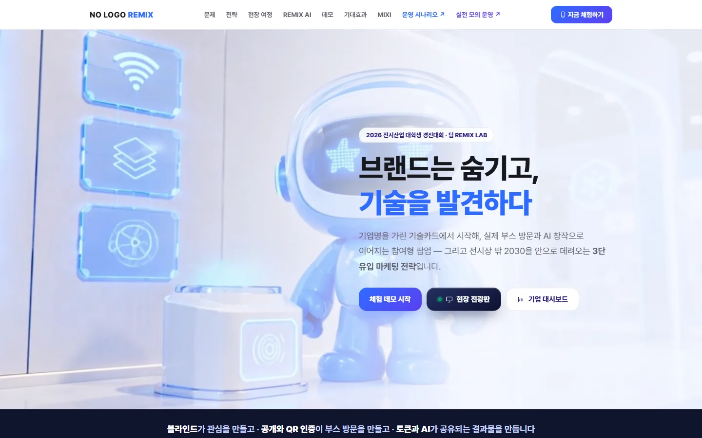
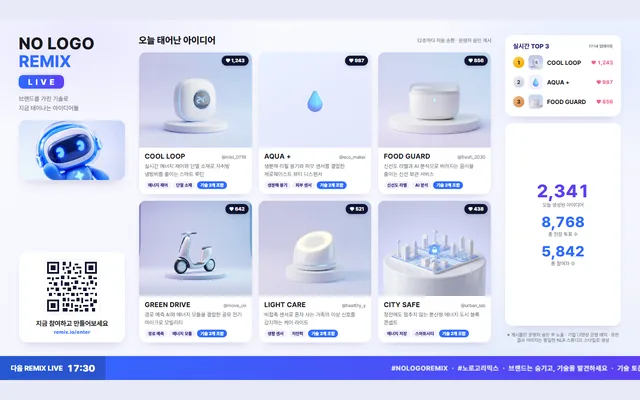
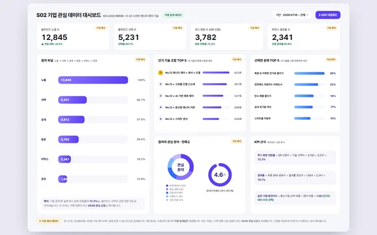

AI 서비스 기획 / MVP 구현 / 전시·마케팅
NO LOGO REMIX
NO LOGO REMIX — A Brand-Blind Exhibition Pop-up
브랜드는 숨기고 기술을 발견하게 하는 참여형 전시 팝업
현재 상태가상 데이터 기반 팀 웹 시연
- 기간
- 2026.07–08
- 팀
- 팀 REMIX LAB (4인)
- 내 역할
- 팀장 · 기획·전략·문서 정리
- 도구
- 수상
- —
내 기여팀장으로 기획·전략을 이끌고 기능명세·기획서·검증 리포트를 정리했습니다. 개발과 마스코트 디자인은 팀원이 맡았습니다.
사진·화면


크게 보기
크게 보기현장 라이브 전광판: 오늘 태어난 아이디어와 실시간 TOP3출처onboarding-web-one-rose.vercel.app/live… (새 창) 
크게 보기참여기업용 관심 데이터 대시보드(가상 예시 데이터)출처onboarding-web-one-rose.vercel.app/dash… (새 창)


문제
기업명보다 기술을 먼저 보여 주고 전시 전·중·후의 참여를 하나로 이으면, 2030 관람객의 기술 탐색과 부스 방문을 도울 수 있다는 가설에서 출발했습니다.
접근
- 기업명을 가린 기술카드·부스 QR 인증·AI 리믹스·피드와 투표의 관람객 여정 설계
- 전시 전 SNS 티저 → 전시 중 체험 → 전시 후 공유 콘텐츠 확산의 3단 유입 전략
- 인터배터리 2026 공식 디렉토리 620개사·실제 기업 22개사 자료와 가상 페르소나 6종으로 이용 여정 점검
핵심 판단
대시보드 수치와 운영 시나리오는 가상 예시임을 화면에 명시
결과
- 전시 디렉토리 분석620개사인터배터리 2026 공식 디렉토리
- 모의 여정 점검 후 수정한 결함6건가상 페르소나(4종·6종) 기반 점검
- 가상 데이터로 구성한 팀 웹 시연 배포: 앱·현장 전광판·기업 대시보드·모의 운영 리포트·피치 페이지
- 가상 페르소나 모의 이용 여정 점검으로 발견한 결함 6건 수정·재검증
- 2026 전시산업 대학생 경진대회 출품
AI 활용
AI 리믹스 단계는 미리 생성한 스타일 고정 이미지 세트로 시연했습니다.
한계와 다음 단계
대시보드 수치는 가상 예시이고 운영 시나리오의 참가기업·부스 구성도 가상 시뮬레이션입니다. 개발과 디자인은 팀원이 맡았습니다.